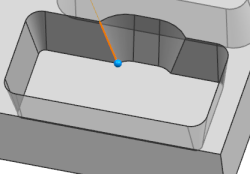
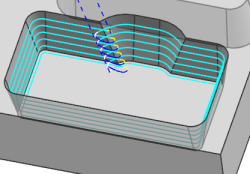

Define a start point
You will start the tool path at the opposite corner.
-
Open the Non Cutting Moves dialog box
-
Click the Start/Drill Points tab.
-
In the Region Start Points group, from the Specify Point list, select End Point
 .
.
-
Select the edge shown to define the end point.

-
Click OK.
-
Generate the tool path.

Notice that the tool path starts and ends where the selected point projects to the current cut level.